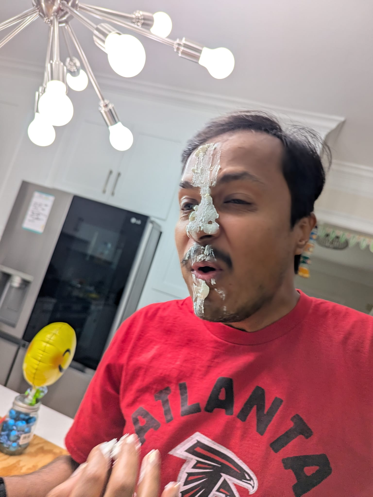
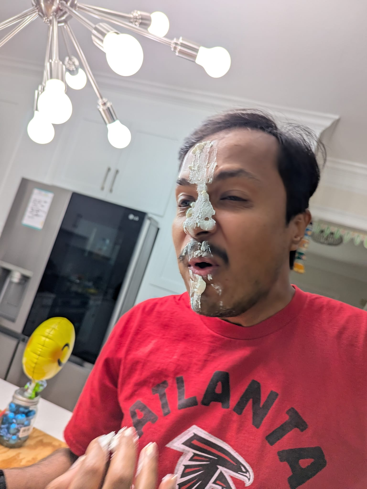

I am a 14-year-old first-generation immigrant, and today, May 14th, is my birthday. I’ve been a student at Amana Academy since the 5th grade, and over the years, it has become more than just a school, it’s where I’ve grown academically and personally. I’ve always had a passion for technology, and some of my favorite hobbies include coding, robotics, web development, and game design. These interests have driven many of the projects I’ve taken on both inside and outside the classroom.
Throughout my time at Amana, I’ve challenged myself to grow in leadership and teamwork by joining several extracurricular activities. I’ve served as secretary for the National Junior Honor Society, participated in the Student Government Association, contributed to the Model United Nations club, and explored historical research through the National History Day Association. Each of these experiences has helped shape my communication, collaboration, and leadership skills.
In the short term, I’ve been focusing on strengthening my abilities in coding and robotics through smaller personal goals and tech-based projects. One of my proudest achievements was my Tech Fair project Prehistoria, a video game about taming dinosaurs. It advanced past both the Amana and Fulton County Tech Fairs, and it showed me the power of storytelling and creativity through code. My next goal is to design a physics-based game using Unreal Engine, which will challenge me to combine programming, design, and problem-solving at a more advanced level.
Looking ahead, my long-term dream is to become a computer hardware engineer. I want to design the technology that powers the future, faster computers, smarter systems, better energy, higher efficiency, and more accessible tools for people around the world. As a changemaker, I hope to use my skills to innovate solutions that make life easier, fairer, and more connected. Whether it’s through games, devices, or software, I want my work to have a real, lasting impact.
I am an Amana student, but not just any Amana student. At the beginning of 5th grade, I was quiet, unsure, and still learning how to navigate the expectations of a new school. Over the years, I’ve grown into someone who is confident, responsible, and ready for a challenge. Amana has helped me build strong academic skills, develop leadership, and understand the importance of community and hard work.
One of the most important ways Amana supported my growth was through the National Junior Honor Society. As a member and secretary, I’ve had many opportunities to improve my leadership and public speaking skills. Thanks to our advisor, Mrs. Hussain, I’ve led group activities, participated in presentations, and served as a docent for school events. Each of these experiences helped me gain confidence speaking in front of others and taught me how to organize and communicate effectively.
Another example of my growth is through my participation in Amana’s annual Tech Fair. Each year, I presented my projects in front of a panel of judges, explaining the design process and the purpose behind my work. One of my most successful projects was Prehistoria, a video game I developed about taming dinosaurs. It passed the Amana and Fulton County Tech Fairs and gave me the chance to practice explaining complex ideas clearly and confidently. Compared to my first Tech Fair, where I was nervous and unsure, by 8th grade I could stand tall, explain my work with pride, and answer questions with ease.
My Arabic classes have also played a major role in my personal and academic growth. In the beginning, I struggled with vocabulary, pronunciation, and writing. But with consistent practice and support from my teachers, I improved steadily. Now, I can read, write, and speak Arabic with much more confidence. Learning another language has opened up new ways for me to connect with people, understand different cultures, and expand my communication skills. It also strengthens my reading and writing in English, which helps me across all subjects — especially in projects that require research or presentations.
These experiences show how much I’ve grown during my time at Amana — from a shy fifth grader to a capable leader and communicator. The skills I’ve gained in public speaking, leadership, and language will continue to support me as I move into high school and beyond. I now know how to express myself, collaborate with others, and take initiative — all qualities that will help me create a positive impact in the world.


.jpg)
At the beginning of 5th grade, school felt overwhelming. New expectations, new subjects, and a lot of uncertainty. But over the years, that changed. Through projects, challenges, and real-world learning at Amana, I’ve grown into someone who thinks deeply, works with purpose, and cares about making a difference. Throughout the 8th grade stem expedition, I demonstrated three important design principles, Empathy and Caring, Success and Failure, and Responsibility for Learning. I also showed three High Five Habits: Compassion, perserverance, and responsibility.
Empathy and Caring

I showed Empathy and Caring in my MUN Resolution, as I learned about the horrors of human trafficking and the result of it in New Zealand. In my research, I found that many people were exploited for laborous work with little to no pay, and that many people were also used for commerical sex acts, even children. This research led me to empathize and truly care for the people subjected to trafficking, and it soon became my responsibility to create a working resolution that could truly solve the issue worldwide.
Success and Failure
Success and Failure came into play when I was building my STEM app for the homelessness. There were many technical challenges, especially when it came to making the app simple to use, mobile-friendly, and accessible. I had to keep improving the design, rewriting parts of the code, and going back to fix errors until it worked. Perserverance was needed for me to fully complete this project, or I would have given up within the first week of development.

Responsibility for Learning
Finally, I showed Responsibility for Learning in my NHD Project, titled, Triggering Change: The Government's Responsibility to Protect Our Rights. In this project, I worked in a group along with my friends and researched about the National Firearms Act of 1934, the reason for its passing, and its events. I went through many articles and credible sources like the Library of Congress, Presidential Libraries, and others. I learned about the many bills that were passed after the NFA and their overall effect to the country. I ensured that I understood my part and that I did my research correctly, ensuring that I learned all about the NFA and its effects.
This year during STEM, our class took on a powerful and meaningful project: designing and building a house for someone experiencing homelessness. It was a group effort and truly a life-changing experience. We followed the Engineering Design Process step by step, using real-world problem solving to make an impact. We started with the empathize stage, where we discussed the causes and effects of homelessness and explored what people experiencing homelessness truly need to feel safe and supported. We listened to real stories and reflected on how we could help through engineering. Then we moved into the define stage, where we clearly stated our challenge: to design and build a livable, secure, and portable home for someone in need. During the ideate stage, we brainstormed ways to help and came up with multiple ideas. One of those was to create a companion app to showcase our design and explain the thinking behind it. We shared sketches, ideas, and models for the house layout and how the app could support the project. Next, in the prototype stage, we began working with a nonprofit called the Mad Housers to learn how to build with wood and understand the structure of micro-homes. We studied the prototype used by past 8th grade classes and made plans for what improvements or changes we could make this year. We built the home together—working during STEM classes, after school, and even partnering with engineers from Honda for support and guidance. Finally, we reached the test stage. After finishing construction, we presented the house and officially gifted it to a person in need. Seeing the result of all our hard work actually help someone in real life was unforgettable. This project helped me realize how engineering isn't just about building things—it's about building solutions for real problems. I now understand how collaboration, compassion, and creativity can come together to make a real difference in someone's life.
These projects not only helped me grow in my design thinking and coding skills, but it also showed me how technology and empathy can work together to solve real problems. In the future, I hope to keep building tools that make a difference — and the habits I’ve practiced at Amana will help guide me every step of the way.

Looking back, I can see just how much I’ve grown since 5th grade. From feeling overwhelmed to confidently solving real-world problems, my journey at Amana has shaped who I am today. Through design thinking, high-quality projects, and the High Five Habits, I’ve learned how to think critically, act responsibly, and create with compassion. Whether it’s a tech fair project that has gone to state level or pushing through challenges in my everyday classes, I now approach every problem with purpose. These experiences have prepared me not just for high school, but for life beyond the classroom, and I’m excited to keep learning, growing, and making a difference in the world.
 


My family has always been my strongest support system. Whenever I faced challenges — whether it was school stress, tough projects, or moments when I doubted myself — they were always there to remind me of what I’m capable of. They encouraged me when I felt stuck, and pushed me forward when I lost motivation. Whether it was helping me stay organized, listening to my ideas, or just being there to cheer me on, their belief in me never wavered. Their constant encouragement and love gave me the strength to keep going, even when things felt overwhelming. I wouldn’t be who I am today without them.
My teachers have been one of the greatest influences on my education. They didn’t just teach, they inspired. They made learning engaging, meaningful, and fun, while always encouraging me to push beyond my limits and stay curious. Their support, patience, and belief in my potential helped me grow into a more confident and capable student.
.jpg)
.jpeg)
.jpg)
My friends made my time at Amana unforgettable. They turned every field trip, event, and classroom moment into something special. Whether we were working on projects together or just having fun, their friendship made every experience more meaningful. They brought joy, laughter, and support into my school life, and I’m grateful for the memories we’ve made together.